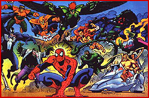
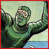

|
|
Villains in
 Spidey has fought against some of the most maniacal arch-criminals ever conceived. Kindly click the image of the foes that you want and get to know the Villains! CARNAGEOne of Spidey's most vicious foes came from the alien symbiote that once was Spidey's black alien costume. It's host, Cletus Kasady was a cell mate to Eddie Brock (Venom) when the alien symbiote came to break Brock out of jail. It left a "baby" behind that bonded with Kasady creating Carnage. THE CHAMELEONThe Chameleon is one of the greatest masters of disguise. He is a brilliant actor and impressionist. He is also a master at creating lifelike masks and make-up. Before treatments made his skin malleable, the Chameleon was a quick-change artist who could assume a new disguise in less than a minute. DOCTOR OCTOPUSOne of the longest-running Spidey villains, showing up way back in Amazing Spider-Man #3, Doctor Otto Octavius, a.k.a. Doc Ock, provided Spidey with some of his most spectacular battles. As, the featured baddie in the 2nd movie, we expect nothing less in the movie version from Alfred Molina. ELECTROOne day while repairing a downed power line, Max Dillon is struck by a bolt of lightning while grasping the power line. The two shocks cancelled each other out; instead of leaving Dillon dead, they granted him extraordinary powers. Spidey can only defeat this foe with a rubber suit and water. THE GREEN GOBLINAlways a colorful foe, the Green Goblin is the only known villain to have discovered Spider-Man's secret identity (for real) and sought to hurt Spidey's friends and family. He is responsible for the death of Peter's true love, Gwen Stacy, and alter-ego Norman Osborne is father to Peter's best friend. THE LIZARDDr. Curt Connors was a gifted GI surgeon until his arm was injured in a blast. An amputee, he was consumed by reptilian biology in the hope of finding a way to regenerate his lost limb. Consuming a serum he'd created, Connors not only grew back an arm, but he was transformed into a mammal hating Lizard man. MAN-WOLFSon of J. Jonah Jameson, John Jameson was an astronaut chosen for a secret moon mission. While there he discovered a ruby-like gemstone that he began wearing as a pendant. The moonstone proved to be an alien artifact that transformed Jameson into the Man-Wolf. Spidey's timely intervention reverted him back. THE SANDMANHiding from police after a prison break, Flint Marko stayed close to the beaches of a nuclear testing area. Thinking no one would look for him there, he walked the sandy shores until a nuclear explosion fused his molecules with those of the sand. Luckily he didn't die, but instead became more powerful than ever!  THE SCORPION P.I. Mac Gargan became the vengeful and psychopathic Scorpion with funding and a bit of coercion by J. Jonah Jameson. Agreeing to experimental physiological enhancement using chemical and radiological bombardments modeling the transformation on a scorpion! Spider-Man 2 movie, Spider-Man 2 movie. THE SHOCKERA second rate Electro, Herman Shultz was a career criminal who built himself a battle suit that sent out shock waves. Not only did his suit help him open safes, but as Spidey found out, it gave him one helluva punch! VENOM Found on an alien planet, the villain known as Venom was at one time Spider-Man's replacement costume. After returning to earth, Spidey found out (with the aid of Mr. Fantastic) that the black costume was actually a parasitic life-form called a symbiote. Returning to his old red and blues only made this creature jealous, and the rest is history. THE VULTURE Adrian Toomes, the original Vulture was a brilliant engineer who started a crimewave after his business partner cheated him. An electromagnetic flying harness gave him the ability to soar like the birds, and its unique radiation had granted him super-human strength. Other villains:
RETURN TO SPIDERMAN'S INTRODUCTION PAGE
|